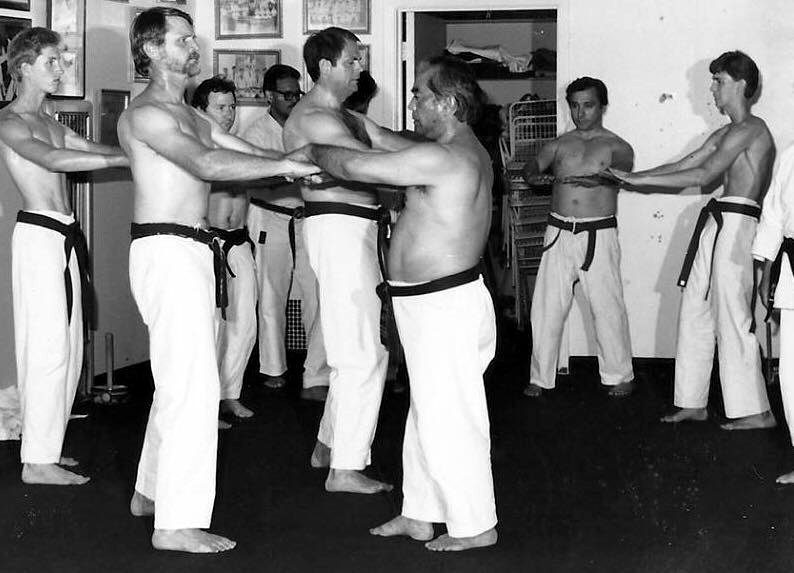
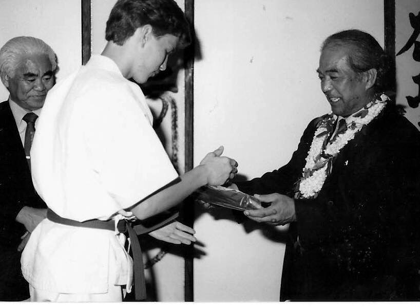
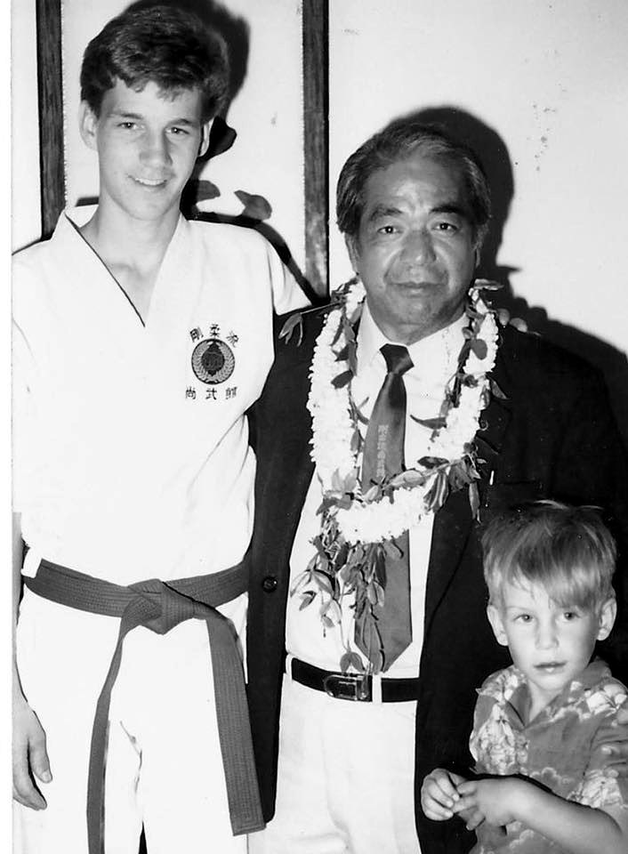
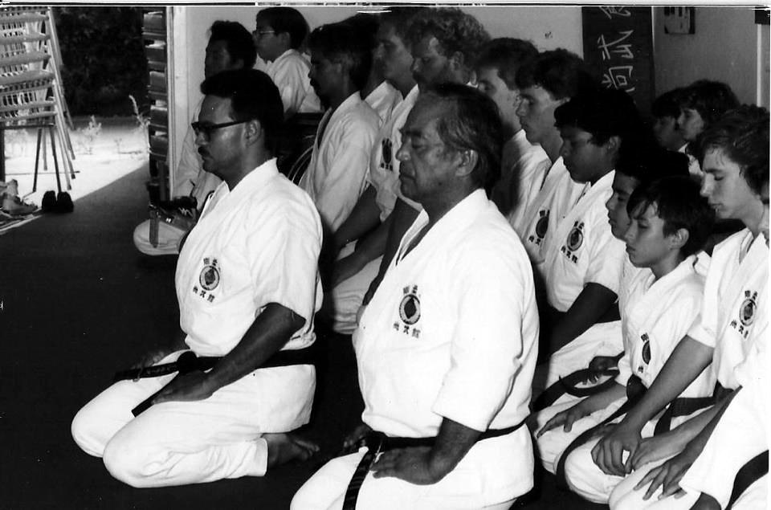

Lineage
Sensei Walker began training under Anthony C. Marquez Sr. in 1985, when Marquez was a senior instructor under Masanobu Shinjo and United States Director of Shobukan Goju-Ryu.
He was a student in Marquez’s dojo when it became Tanzenbukan Goju-Ryu, making him one of Tanzenbukan’s original students, and went on to train under Marquez for more than 35 years.
As a teen, Sensei Walker was fortunate to have the opportunity to meet Masanobu Shinjo, founder of Shobukan Goju-Ryu, and to test before him for 2nd kyu.




Photos from Masanobu Shinjo’s visit to the dojo of Anthony C. Marquez Sr., circa 1987.
Marquez is the founder of Traditional Martial Arts International (TMAI), Tanzenbukan Goju-Ryu, and the Kokusai Ryukyu Kobujutsu Kenkyokai.
Roots on Okinawa
Marquez arrived on Okinawa in 1971 as a young U.S. Air Force serviceman. His karate teacher there was Masanobu Shinjo of the Shobukan Goju-Ryu Karate Organization. A close relationship followed that included private lessons and an appointment as Shinjo’s adviser on international affairs. Marquez became the Shobukan representative in the United States upon his return in 1985, and received 6th dan from Shinjo in 1987.
His first Okinawan weapons teacher was Masanobu Kina, nephew of the renowned Shosei Kina, with whom he trained for about sixteen months. Through a letter of introduction from Shinjo, he was then accepted into the Jinbukan dojo of Katsuyoshi Kanei, Shinjo’s childhood friend and one of the finest kobudo practitioners of his generation. Marquez received Nidan at the Matayoshi Dojo in 1985, and later 5th dan and Shihan from Kanei, serving as his United States representative.
In 1995, Marquez returned to Okinawa in search of Kaishu Isa, a fellow student of Masanobu Kina under Shosei Kina and the third-generation soke of Ufuchiku Kobujutsu. That meeting began a lasting connection: Isa shared his Ufuchiku weapons and karamiti, the old art that predates modern karate, and in 1998 Marquez received a Renshi appointment from him.
The Dōshūkan family is grateful for the foundation built through this lineage.
Further reading: “Okinawan Journey” by Anthony C. Marquez Sr., originally published in Bugeisha magazine, 1996.